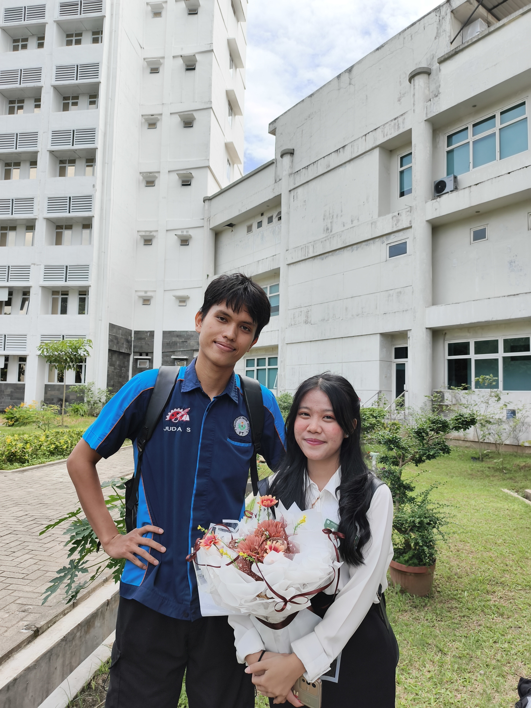

Jurnal Ini Milikmu
Setiap foto menyimpan tawa, setiap baris menyimpan rindu. Jurnal ini adalah milikmu, ingatlah bahwa kau pernah berbagi cerita dengan siapa saja.
- I Wish I Could Turn Back Time -
buat kenangan baru mu
Hai Ristin, semua kisah KKN kita yang sangat berharga... Aku kumpulkan semuanya di dalam jurnal kenangan ini. Bukalah halaman demi halaman dan hidupkan kembali hari-hari indah kita di posko.


kenangan buat ristin
Setiap foto menyimpan tawa, setiap baris menyimpan rindu. Jurnal ini adalah milikmu, ingatlah bahwa kau pernah berbagi cerita dengan siapa saja.
- I Wish I Could Turn Back Time -

hari dimana kita kecelakaan, bibirmu terluka dan sempat-sempatnya ku foto hahaha
rindu rasanya...

terkadang kau selalu menjadi objek tengah disetiap foto tau...

Ristin menjadi mc ANHI, jujur aku gak nyangka ristin yang selalu pemalas, ngantuk, tidur di posko, selalu berwajah runyam, bisa memimpin proses pembuatan ANHI dari awal hingga akhir, rispek banget gw sama loe.

gatau kenapa ada kesan unik dalam foto ini... apa ya?

seru banget masa-masa ini, jadi guru les buat anak-anak nagur.

disini jujur kaget tiba-tiba kau duluan yang ngajak foto berdua, yang sempro siapa yang ngajak foto siapa...

Cerita memori kosong...

catatan ultah angah!!!!!!
Telah hadir di hidupku dan mewarnai kisah KKN yang luar biasa asyik ini. Sampai jumpa di kisah-kisah masa depan selanjutnya!
Sebuah Kenangan yang Abadi
© 2026 Jurnal Kenangan